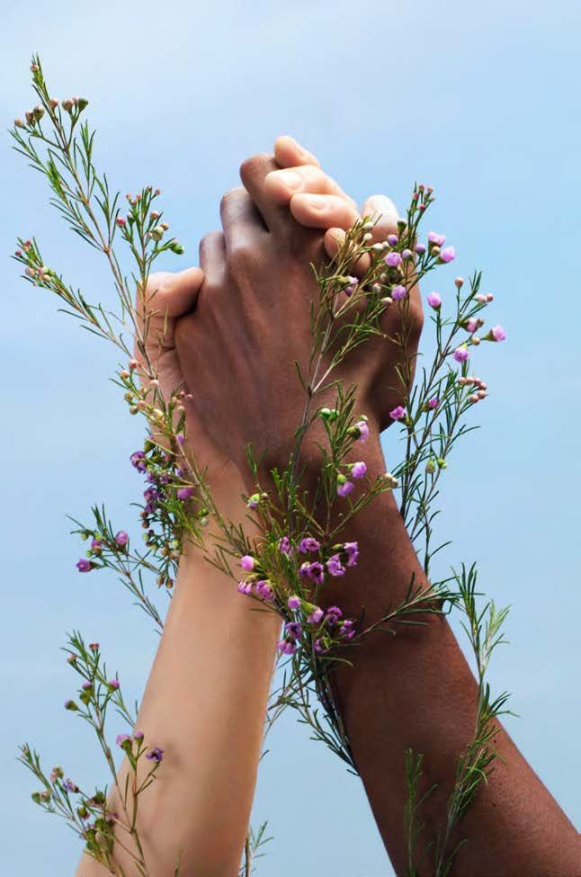
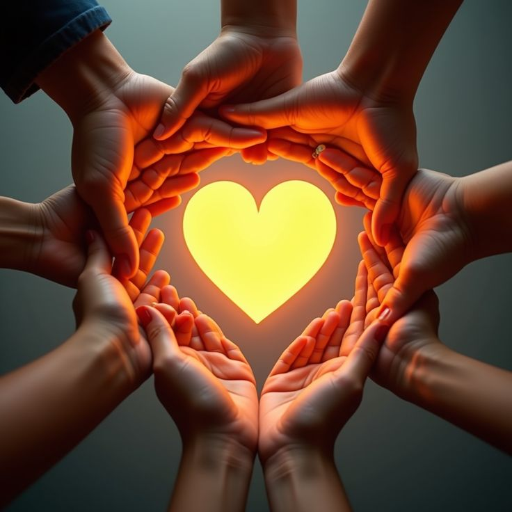

01 · Experiencias
Historias
Lee relatos de ejemplo sobre situaciones de la vida cotidiana.
Ver historias →Un espacio para escuchar
HUELLA es una propuesta de sitio web para compartir experiencias, encontrar información útil y conocer opciones de apoyo con respeto y privacidad.
Explorar historiasUn espacio sencillo que organiza experiencias y recursos informativos.
Lee relatos de ejemplo sobre situaciones de la vida cotidiana.
Ver historias →
Consulta categorías de recursos y opciones para buscar ayuda.
Consultar recursos →
La información personal debe tratarse con cuidado y consentimiento.
Conocer recomendaciones →